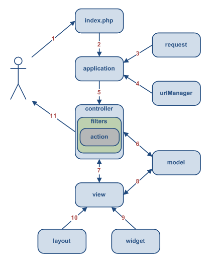
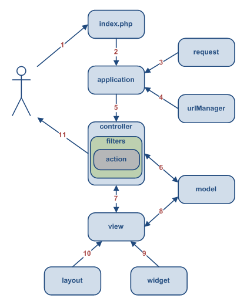

OBJETIVOS
- IMPLEMENTAR UN MAPA DE CONOCIMIENTO SOBRE PLATAFORMA WEB USANDO ONTOLOGÍAS PARA GESTIÓN DE CONOCIMIENTO ORGANIZACIONAL.
- Definir las ontologías que modelan los conceptos del dominio mediante varios lenguajes para adecuar los recursos a un modelo de conocimiento.
- Elaborar el mapa de conocimiento mediante metodologías típicas para implementar el mismo al S.I.
- Indagar que herramientas y arquitectura soportan un S.I. orientado a Gestión del Conocimiento buscando y consultando múltiples fuentes para establecer los detalles técnicos de la plataforma de implementación.
- Diseñar las plantillas y páginas interfaz usando técnicas de diseño web para obtener la interfaz del S.I. que presentará las funcionalidades de gestión del conocimiento y de mapa de conocimiento al usuario.
MARCO TEÓRICO
- GESTIÓN DEL CONOCIMIENTO (KM), MAPAS DE CONOCIMIENTO (KMAP) Y ONTOLOGÍAS
- ESTÁNDARES, WEB Y LENGUAJES DE MARCAS
- RESOURCE DESCRIPTION FRAMEWORK (RDF), ONTOLOGÍAS Y WEB SEMÁNTICA
- FRAMEWORKS Y YII FRAMEWORK
- ENTORNO Y STACK DE COMPONENTES (XAMPP)
GESTIÓN DEL CONOCIMIENTO (KM)
- Concierne con la obtención, acceso, y mantenimiento del conocimiento en una organización. Ha emergido como una de las actividades clave de los negocios grandes porque ellos ven el conocimiento interno como un activo intelectual del cual pueden obtener gran productividad, crear nuevo valor, e incrementar su competitividad (Antoniou y van Harmelen, 2008).
- Comprende un rango de estrategias y prácticas usadas en una organización para identificar, crear, representar, distribuir y habilitar la adopción de comprensión y experiencias. Esta comprensión y experiencias comprenden conocimiento, ya sea encarnado en individuos o embebido en procesos o prácticas organizacionales. Los esfuerzos de KM típicamente se concentran en objetivos organizacionales como desempeño mejorado, ventaja competitiva, innovación, compartir lecciones aprendidas, integración y mejoramiento continuo de la organización (Daconta et al., 2003).
- Disciplina que comprende las herramientas, técnicas y procesos para el manejo más efectivo y eficiente de los activos intelectuales de una organización (Davies et al., 2003).
MAPAS DE CONOCIMIENTO (KMAP)
- Herramienta de apoyo para la gestión del conocimiento, herramienta que apoya la identificación de recursos y procesos para facilitar la interacción y socialización de conocimiento entre los actores de la organización.
- De acuerdo con PÉREZ, D. & DRESSLER, M. (2007), los mapas de conocimiento son “directorios que facilitan la localización del conocimiento dentro de la organización mediante el desarrollo de guías y listados de personas, o documentos, por áreas de actividad o materias de dominio”, que con apoyo de la tecnología son publicados como directorios o gráficos que muestran en dónde se encuentra el conocimiento (DAVENPORT, T. & PRUSAK, L.; 1998).
- Se conciben como representaciones visuales del conocimiento y se convierten en un sitio para encontrar respuestas de una manera más rápida en la organización (UNIVERSIDAD EAFIT; S.F.).
ONTOLOGÍAS
- Un vocabulario preciso con el que el conocimiento puede ser representado. El vocabulario nos permite especificar cuáles entidades serán representadas, cómo pueden ser agrupadas, y cuáles relaciones las conectan unas a otras (Segaran et al., 2009).
- Es decir que se puede entender ontología como una entidad o unidad que organiza todo lo existente en el mundo en una jerarquía de categorías (Russel y Norvig, 2004).
- Unidad que define las palabras y conceptos comunes (el significado) usados para describir y representar un área del conocimiento (Daconta et al., 2003).
- Producto de ingeniería consistente de un vocabulario específico usado para describir [una parte de] la realidad, más un conjunto explícito de asumpciones que tienen que ver con el significado intencionado de ese vocabulario, en otras palabras, la especificación de una conceptualización (Daconta et al., 2003).
- Entrelaza el entendimiento humano de símbolos con su procesabilidad por máquinas, facilita el compartimiento y re-uso de conocimiento y sobretodo promete un entendimiento compartido y común de un dominio que puede ser comunicado entre personas y sistemas de aplicaciones (Davies et al., 2003).
ESTÁNDARES, WEB Y LENGUAJES DE MARCAS
- SGML, HTML, XML, XHTML, XML Schema, RDF, RDF Schema, OWL.
RESOURCE DESCRIPTION FRAMEWORK (RDF), ONTOLOGÍAS Y WEB SEMÁNTICA
- PRINCIPIOS
- RDF Y TRIPLETAS
- LOS ELEMENTOS BÁSICOS DE RDF
- RDF Y ONTOLOGÍAS
- RDF Y WEB SEMÁNTICA
FRAMEWORKS Y YII FRAMEWORK
- Estructura conceptual y tecnológica de soporte definido, normalmente con artefactos o módulos de software concretos, con base a la cual otro proyecto de software puede ser más fácilmente organizado y desarrollado.

ENTORNO Y STACK DE COMPONENTES (XAMPP)
DESARROLLO DEL PROYECTO
- INICIO
- PLANEACIÓN
- EJECUCIÓN
- CONTROL
- CIERRE
INICIO
Se plantea la Carta del Proyecto con la descripción de aspectos generales del mismo.

PLANEACIÓN (1/4)
WBS (WorkBench Structure) ó EDT (Estructura de Descomposición del Trabajo)
PLANEACIÓN (2/4)
Tabla de Precedencias
PLANEACIÓN (3/4)
Ruta Crítica
PLANEACIÓN (4/4)
Diagrama de Gantt
EJECUCIÓN
Planeación de Riesgos


EJECUCIÓN
Planteamiento de los Casos de Uso
EJECUCIÓN
Descripción de los actores
EJECUCIÓN
Descripción de los Casos de Uso

CONSTRUCCIÓN DEL VOCABULARIO
Aplicación de la metodología OTK (On-To-Knowledge)
ESTUDIO DE FACTIBILIDAD
Casos de Uso de OTK

ESTUDIO DE FACTIBILIDAD
Metodología CommonKADS
FASE INICIAL
Documento de especificación de requerimientos de ontología (ORSD)

FASE DE REFINAMIENTO (1/4)
Jerarquía de conceptos en forma de mapa mental (MCO)
FASE DE REFINAMIENTO (2/4)
Sintaxis Turtle para modelar el vocabulario
FASE DE REFINAMIENTO (3/4)
Herramienta rapper para convertir de Turtle a RDF nativo
FASE DE REFINAMIENTO (4/4)
Documentos RDF obtenidos son validados
EVALUACIÓN, MANTENIMIENTO Y EVOLUCIÓN
EVALUACIÓN
- Enfocada en la tecnología: propiedades de las ontologías generadas por las herramientas de desarrollo (conformidad de lenguaje, consistencia, etc.), y propiedades tecnológicas (interoperabilidad, escalabilidad, alojamiento en memoria, etc.).
- Enfocada en el usuario: conformidad con ORSD (ver Tabla XXXII.), conformidad con preguntas de competencia (ver Tabla XXXIII.), y patrones de uso.
- Enfocada en la ontología: metodologías formales de evaluación de ontologías.
MANTENIMIENTO Y EVOLUCIÓN
- El mantenimiento y evolución de una aplicación basada en ontología es primariamente un proceso organizacional. Acorde a su rol es el Ingeniero de Conocimiento el actor encargado de modificar la ontología, sin embargo deben programarse los intervalos en que los mantenimientos se harán con su respectiva monitorización, pruebas y análisis de efectos colaterales. De igual forma debe existir una integración entre el equipo de TI encargado de la aplicación basada en la ontología y el equipo de KM.
- La aplicación soportando la ontología debe adaptarse a un entorno cambiante, así como la misma ontología debe adaptarse también (evolución de la ontología). Los aspectos a evolucionar son la extensión de la ontología por medio de nuevas entradas léxicas, cambio del significado de las entradas léxicas, o que partes de la ontología se vuelvan obsoletas (no se necesiten más).
MODELO DE DATOS
MVC, DIAGRAMAS Y FLUJO SEGÚN Yii FRAMEWORK
 

INSTALACIÓN, IMPLEMENTACIÓN Y DESPLIEGUE
LIBRERÍAS Y HERRAMIENTAS EXTERNAS
ARC RDF Classes for PHP; Springy.js; Fancybox.
CONTROL & CIERRE
CONTROL
- Versiones, BackUps, CVS, Github.
- Control de cronograma.
- Seguimiento de hitos.
- Pruebas de funcionalidad.
CIERRE
- Reporte final.
- Entregables.
- Documentación y Socialización.
RESULTADOS
- Formulación de jerarquía de conceptos y clases describiendo los recursos organizacionales en un nivel táctico y estratégico.
- Vocabulario del MCO en el lenguaje estándar recomendación del W3C RDF/XML.
- Arquitectura, plataforma y stack de componentes apropiadas para implementar la aplicación web soportando el vocabulario implementado.
- Aplicación web implementada usando un framework PHP OO proporcionando el sistema básico que provee las funcionalidades a los usuarios de la misma.
- Sistema integrando la aplicación web con el vocabulario RDF/XML implementado del MCO.
- S.I. con funcionalidad de Mapa de Conocimiento (KMap) sobre plataforma web enfocado en Gestión de Conocimiento Organizacional (KM).
- Los entregables/tangibles del proyecto KMap son:
- Paquete para instalación y despliegue de la aplicación web funcional.
- Manual y documentación técnica.
- Manual y documentación de usuario.
CONCLUSIONES
- El complejo flujo de información y el acelerado avance de las T.I. hacen que las organizaciones se releguen ante los actuales y nuevos retos que deben enfrentar.
- La Gestión del Conocimiento y la Gestión Tecnológica son disciplinas fundamentales en el éxito organizacional.
- El conocimiento es y debe ser el activo fundamental, original y propio de una organización y lo que le da su identidad frente a las demás.
- Es importante ejercer una KM acorde con las técnicas y estándares actuales y que no retrase el avance tecnológico de la organización.
- Técnicas de Ingeniería del Conocimiento y Representación del Conocimiento se presentan como un enfoque adecuado para modelar el dominio de conceptos y clases que conciernen a una organización.
- Es importante usar estándares y plataformas convencionales como la web incluso para actividades clave como la KM.
RECOMENDACIONES
- Por estar enfocado en los niveles táctico y estratégico, el MCO debe ser una visión genérica y holística de la realidad organizacional.
- Diseñar el MCO con un modelo de BD en mente.
- Usar frameworks o técnicas que automaticen la creación de código repetitivo.
- Usar lenguajes y herramientas de serialización para escribir el vocabulario a implementar.
- Acogerse a los estándares y recomendaciones y usar plataformas y tecnologías web.
Slide Styles
- class="red"
- class="red2"
- class="red3"
- class="blue"
- class="blue2"
- class="blue3"
- class="green"
- class="green2"
- class="green3"
- class="yellow"
- class="yellow2"
- class="yellow3"
- class="gray"
- class="gray2"
- class="gray3"
- class="gray4"
I am centered text with a and button.
Segue Slide
Subtitle Placeholder
Full Image (with Optional Header)
This is an example of quote text.
Slide with Iframe
<Thank You!>
Important contact information goes here.